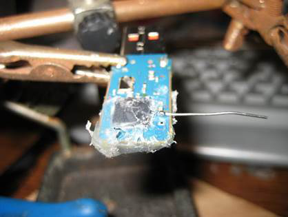
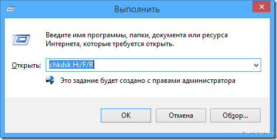
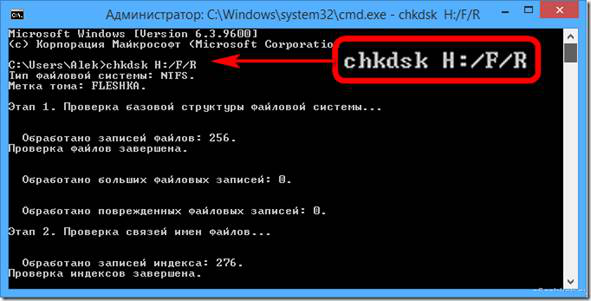
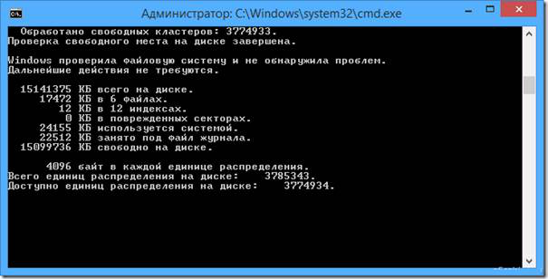
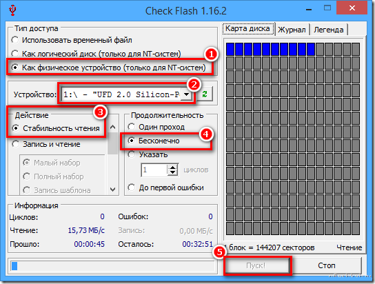
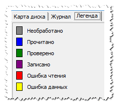
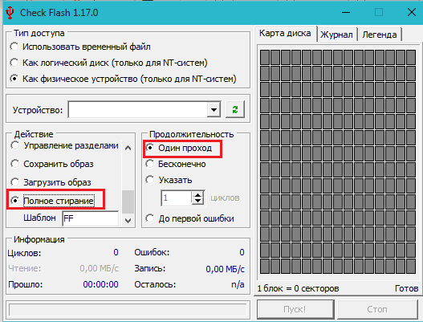

Как проверить флешку и MicroSD карту на ошибки и протестировать на работоспособность? Программа для проверки и тестирования флешек и SD карт: как скачать?
Опубликовано в Полезные советы
/
14 Апр 2017
Комментариев 0
Список распространённых проблем с работой USB-флешек и microSD-карт, а также руководство по их исправлению.
Навигация
Проблемы с девайсами для хранения информации случаются не редко. Будь то стандартный компьютерный жесткий диск, USB-флешка или обычная карта памяти microSD, все они подвержены как механическим повреждениям, так и программным. Флешки и карты памяти сегодня стоят относительно недорого и в случае поломки их можно заменить без особого удара по карману. Но если на них хранится ценная информация, которую терять совсем не хочется, то невольно начинаешь задумываться об их восстановлении.
В этой статье мы подробно раскроем тему проверки USB-флешек и microSD-карт на работоспособность и ошибки, а так же расскажем, каким образом их можно попытаться восстановить.
Реанимация USB-флешек и microSD-карт
Распространённые причины выхода из строя USB-флешек и microSD-карт
Физические повреждения накопителя
Повреждение корпуса
Рисунок 1. Распространённые причины выхода из строя USB-флешек и microSD-карт
- Данная проблема характерна больше для стандартных USB-флешек. При сильном ударе может повредиться корпус или погнуться USB-разъём, из-за чего компьютер перестанет распознавать внешнее устройство. В этом случае накопитель уже не подлежит восстановлению и его можно только заменить. Однако, если при ударе чип памяти не был повреждён, можно обратиться к специалистам, которые при помощи специального оборудования восстановят с неё все данные.
Попадание влаги
Рисунок 2. Распространённые причины выхода из строя USB-флешек и microSD-карт
- При попадании внутрь корпуса накопителя влаги её необходимо тщательно высушить. Использование мокрой флешки может привести к замыканию и, соответственно, к потере информации на ней. Сушить её необходимо несколько дней в сухом тёплом месте. Не прибегайте к помощи фена, т.к. горячий поток воздуха может сжечь контакты. Есть большая доля вероятности, что после просушки накопитель вновь будет исправно работать. Если этого не произошло, то с неё так же можно восстановить данные при помощи специалистов.
Перепады напряжения

Рисунок 3. Распространённые причины выхода из строя USB-флешек и microSD-карт
- Очень распространённая причина, по которой из строя выходят не только USB-накопители, но и компьютеры. Чрезмерное или недостаточное поступление электрического тока может привести к перегоранию контактов и чипа памяти, вследствие чего вся информация с флешки будет утеряна навсегда. Причиной этому часто служит заводской брак, когда при сборке путают полярность контактов. Вторая по популярности причина – незаземлённые розетки. Единственный способ предотвратить такую поломку – вовремя менять проводку в доме.
Логические неисправности накопителя
Некорректное использование накопителя
Рисунок 4. Распространённые причины выхода из строя USB-флешек и microSD-карт
- Логические ошибки в работе USB-флешки или microSD-карты заключаются в том, что физически они полностью исправны, однако при подключении к компьютеру устройство распознаётся им как неформатированное или пустое. Это говорит о том, что произошёл сбой в файловой системе накопителя, который мог быть вызван перебоями питания при работе с устройством или недобросовестным отношением пользователя к нему. Преждевременное извлечение карты памяти или флешки из компьютера приводит к повреждению служебных таблиц, из-за чего и может возникать выше названая проблема. Чтобы избежать логических ошибок на внешних накопителях при работе в операционной системе Windows, всегда пользуйтесь функцией «безопасного извлечения устройства».
Естественный износ памяти внешнего накопителя

Рисунок 5. Распространённые причины выхода из строя USB-флешек и microSD-карт
- Данная проблема чаще всего связана с заводским браком или долгим использованием внешнего накопителя. USB-флешки и microSD-карты тоже подвержены старению. После длительного использования устройства при чтении данных могут возникать ошибки, долго загружаться содержимое накопителя, некорректно записываться архивы и искажаться файлы. Часто устройство может выдавать уведомление об ошибке CRC.
- Если изначально USB-флешка или microSD-карта функционировала нормально, но спустя какое-то время появились выше описанные проблемы, то причина заключается в физическом повреждении памяти в результате износа. На внешних накопителях используется тип памяти NAND, которая имеет ограниченное количество перезаписей. Постоянная запись и дальнейшее удаление информации с накопителя приводит к тому, что некоторые ячейки памяти выходят из строя. Это не было бы серьёзной проблемой, если бы запись данных на флешке происходила равномерно. Однако файловая система FAT устроена таким образом, что её системные таблицы перезаписываются после каждого обновления файлов, что приводит к образованию битых секторов в самых неприятных местах.
Как проверить флешку и microSD-карту на ошибки и протестировать на работоспособность средствами Windows?
В операционных системах Windows существует стандартное приложение Check Disk, позволяющее протестировать внешний накопитель на работоспособность и проверить на наличие ошибок. В ходе проверки приложение способно устранить проблемы в файловой системе USB-флешки или microSD-карты, если они не вызваны физическими повреждениями. Чтобы проверить девайс на наличие ошибок, Вам необходимо сделать следующее:
- Шаг 1. Подключите USB-флешку или microSD-карту к компьютеру. Далее откройте меню «Пуск» и выберите пункт «Выполнить». В открывшемся окне введите команду «cmd» и нажмите «Enter» для запуска командной строки.

Рисунок 1. Как проверить флешку и microSD-карту на ошибки и протестировать на работоспособность средствами Windows?
- Шаг 2. В открывшемся окне введите команду «chkdsk H:/F/R». Вместо «H» напишите букву, под которой компьютер распознал Вашу флешку или microSD-карту. Нажмите «Enter» для запуска проверки внешнего накопителя.

Рисунок 2. Как проверить флешку и microSD-карту на ошибки и протестировать на работоспособность средствами Windows?
- Шаг 3. Запустится тестирование флешки на работоспособность и проверка на наличие ошибок файловой системы и битых секторов памяти. В ходе проверки по возможности команда исправит найденные ошибки и в конце выдаст отчёт о проделанной работе, где будет указано найденное количество поврежденных секторов. Для выхода из командной строки введите «Exit» и нажмите «Enter».

Рисунок 3. Как проверить флешку и microSD-карту на ошибки и протестировать на работоспособность средствами Windows?
После завершения процедуры извлеките USB-флешку или microSD-карту из компьютера через «Безопасное извлечение устройства» и повторно подключите. Проверьте её на работоспособность. Если проблемы не исчезли, то необходимо провести более глубокую проверку накопителя при помощи постороннего софта.
Как проверить флешку и microSD-карту на ошибки и протестировать на работоспособность с помощью программы Check Flash?
- Часто бывает так, что для исправления ошибок файловой системы USB-флешки или microSD-карты стандартных средств Windows может быть недостаточно. Команда «chkdsk» делает лишь поверхностную проверку. Для глубокой проверки необходимо прибегать к специализированному софту, который использует оригинальные алгоритмы. Одной из лучших программ для этих целей является Check Flash.
- Программа является бесплатной и скачать её можно на официальном сайте разработчика по этой ссылке. Она способна работать со всеми существующими типами флешек и карт памяти, включая HDD-диски, проводить тест работоспособности накопителя, измерять мгновенную скорость чтения и записи данных, полностью форматировать устройство, восстанавливать битые сектора и разделы памяти.
Как проверить флешку и microSD-карту на ошибки и протестировать на работоспособность с помощью программы Check Flash?
ВАЖНО: Перед проверкой USB-флешки или microSD-карты с помощью программы Check Flash, перенесите все ценные файлы на другой носитель! В процессе проверки и тестирования накопителя все данные с него будут стёрты. Если Вы неопытный пользователь и впервые сталкиваетесь с программой такого рода, лучше всего обратитесь за помощью к профессионалу. Администрация сайта не несёт ответственности за использование данного ПО!
Чтобы проверить USB-флешку или microSD-карту с помощью программы Check Flash, проделайте следующие шаги:
- Шаг 1. Скачайте программу с официального сайта разработчика, извлеките её из архива и запустите. Далее, в открывшемся окне программы в разделе «Тип доступа» выбрать пункт «Как физическое устройство», после чего выбрать из списка флешку, которую Вы хотите протестировать. В разделе «Действие» отметьте пункт «Стабильность чтения», а в разделе «Продолжительность» выберите «Бесконечно».

Рисунок 1. Как проверить флешку и microSD-карту на ошибки и протестировать на работоспособность с помощью программы Check Flash?
- Шаг 2. Нажмите кнопку «Пуск» для начала проверки флешки на ошибки и тестирования на работоспособность. С правой стороны на вкладке «Карта диска» будет отображаться ход процесса проверки секторов. Рабочие сектора без повреждений будут подсвечиваться синим цветом, сектора с ошибками чтения и данных подсвечиваются желтым и красным. После завершения проверки её результаты можно будет посмотреть на вкладке «Журнал».

Рисунок 2. Как проверить флешку и microSD-карту на ошибки и протестировать на работоспособность с помощью программы Check Flash?
- Шаг 3. После завершения проверки отключите флешку от компьютера через «Безопасное извлечение устройства», после чего подключите вновь и проверьте её работоспособность. Если ошибки продолжают появляться, то остаётся только отформатировать её.

Рисунок 3. Как проверить флешку и microSD-карту на ошибки и протестировать на работоспособность с помощью программы Check Flash?
- Шаг 4. Для форматирования накопителя в разделе «Действие» выберите пункт «Полное стирание», а в разделе «Продолжительность» поставьте отметку напротив «Один проход». Все остальные пункты оставьте без изменений. Нажмите «Пуск» и дождитесь завершения форматирования.
Если после полного форматирования продолжают возникать ошибки в работе USB-флешки или microSD-карты, то, скорее всего, они имеют серьёзные физические повреждения и восстановлению не подлежат.